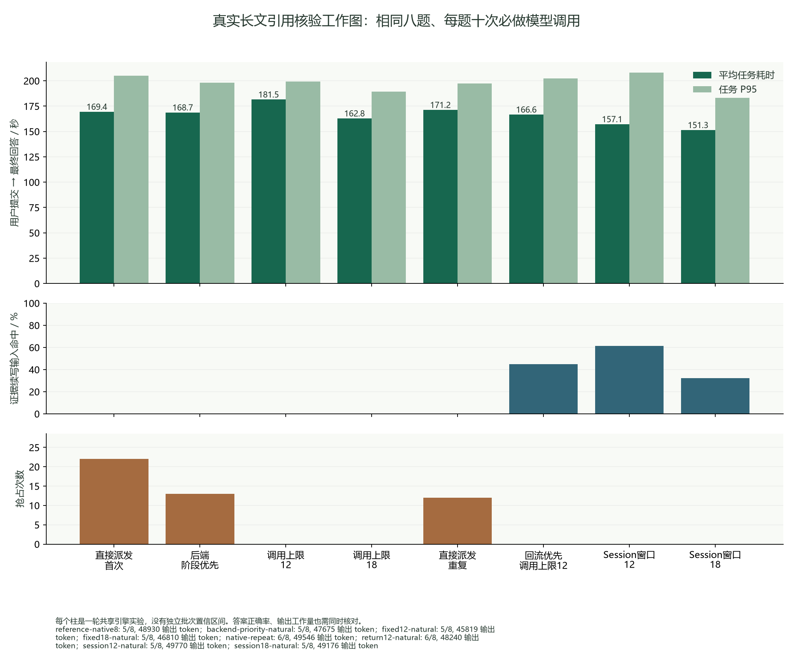

SONGPROJGPU1 · QWEN 27B · 持续实验
从真实任务，检查 Harness 派发的设计空间
每个数字对应一次完整实验。选择轮次，查看实际任务流程；点击模型或工具，展开角色说明、原始 prompt、参数和返回结果。
队列变短、缓存更空或抢占减少，都不直接等于任务更快。比较时同时看回答质量、实际工作量和从任务提交开始计算的耗时。
研究进展 · v020 / v021
混合干扰确实存在，复杂机制还没有超越强排序
固定同样的输入和生成量，短任务单独运行平均34.89秒，混入长文后两次为140.50和138.43秒；同一任务约慢四倍。长任务由170.90秒变为196.55–198.62秒，资源竞争同时影响两组。
普通回流排序24的整体均值138.17秒，历史预算137.58秒，仅差约0.43%，后者P95反而更高。短输入排序整体均值更低，却让长任务比回流排序更慢。下一步集中检验独立任务共享引擎时，后端状态是否提供前端自有图以外的有效信息。
选择一轮实验
正在读取已完成的实验记录…
| 完整轮次 | 任务数 | 模型调用 | 答题得分 | 任务平均 / 秒 | P95 / 秒 | 抢占次数 |
|---|
HotpotQA 显示答案 F1；LongBench-v2 显示选项准确率。混合任务分别显示长文准确率和短文 F1。不同数据、流程或思考预算的轮次不能直接作为等工作量调度比较。单批内任务相互干扰，任务数不等于独立重复次数。
实际案例 · 数据集原始任务
一次任务流程
D1 · 分支与工具的启动时机本批固定必做分支数。工具等待中的后续调用尚未进入引擎队列，是接下来要验证的需求信号。
D2 · 已就绪模型请求的派发静态上限、压力反馈、进度排序和后端优先级是已实现基线。是否有效由完整任务结果判断。
持续 Session · 历史状态复用带来源验证的流程会在工具之后继续同一 Session。缓存复用和回流竞争需要实测，不能仅由流程图推断。
工作集对照 · 展开实测汇总图
相同八题、十次必做调用；包含全部等待。每种设置目前只有单轮或少量重复，没有批次置信区间。更高命中率不保证更低任务时延，图下注明准确率与实际输出量。

如何审核这组证据
原始模型与工具日志保存在服务器，每轮公开一个完整任务的原始案例、全部任务的离线评分、参数和约 300 字记录。数据来自固定版本公开数据集，隐藏答案只用于离线评分。Harness 为自行实现的相似系统，未声称复现 DSH 完整源码。DSH默认的8个活跃子Agent名额按任务树计数；这里每根三个子任务不会触发该限制，全局Session窗口是另加的实验策略。旧日志的activation区间实际指单次模型调用，语义说明已单列。